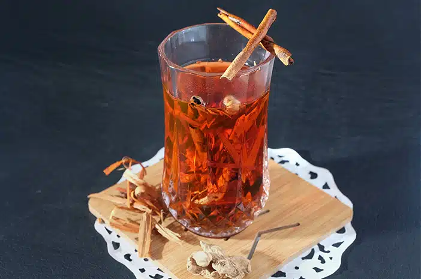

Kategori Makanan Yogyakarta

Sate Klathak Pak Bari
⭐⭐⭐⭐☆

Gudeg Pawon
⭐⭐⭐⭐⭐

Soto Bathok Mbah Katro
⭐⭐⭐⭐☆

Bakmi Jawa Pak Pele
⭐⭐⭐☆☆
Kategori Minuman Yogyakarta

Wedang Uwuh
⭐⭐⭐⭐⭐

Kopi Joss
⭐⭐⭐⭐☆

Rujak es krim
⭐⭐⭐⭐☆
Kategori Oleh-oleh Yogyakarta
Yangko
⭐⭐⭐⭐⭐

Bakpia Pathok
⭐⭐⭐⭐⭐